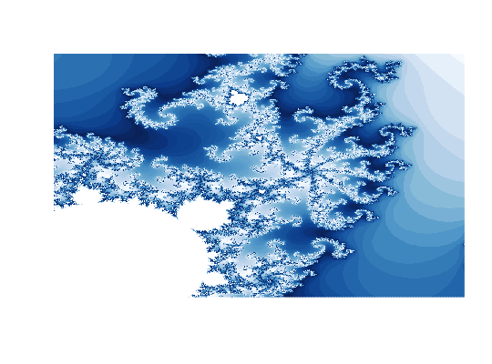
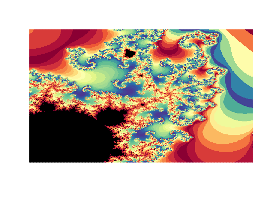

Takes a simple palette and expands / oscillates it for use with Mandelbrot sets.
mandelbrot_palette(palette, fold = TRUE, reps = 1L, in_set = "black")
| palette | vector of color hex strings (e.g. '#FFFFFF') |
|---|---|
| fold | wrap or fold the palette back on itself |
| reps | number of times to replicate the color vector |
| in_set | color for areas in the Mandelbrot set |
an extended color vector
view <- mandelbrot(xlim = c(-0.8438146, -0.8226294), ylim = c(0.1963144, 0.2174996), iter = 500) # can be used to simply interpolate a color gradient spectral <- RColorBrewer::brewer.pal(11, "Spectral") cols <- mandelbrot_palette(spectral, fold = FALSE) plot(view, col = cols, transform = "inv")# simple palettes might need folds / reps to look good blues <- RColorBrewer::brewer.pal(9, "Blues") cols <- mandelbrot_palette(blues, in_set = "white", fold = TRUE, reps = 2) plot(view, col = cols, transform = "log")